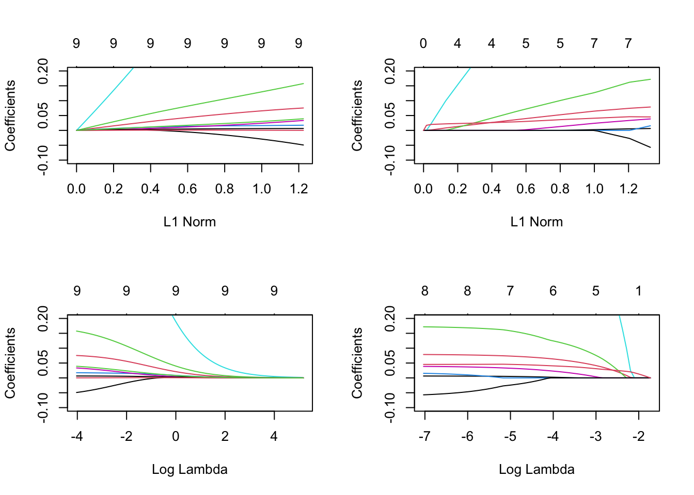
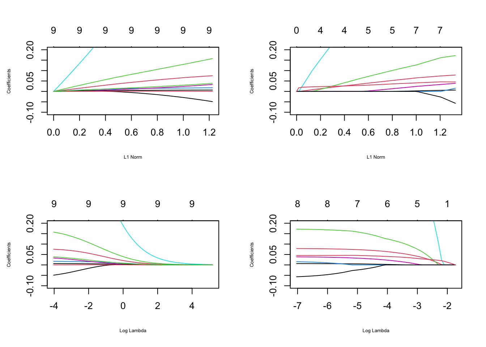

library(bestglm)
data(SAheart)
SAheart.X <- model.matrix(chd~.,data=SAheart)[,-1]
SAheart.Y <- SAheart$chd
library(glmnet)
ridge <- glmnet(SAheart.X,SAheart.Y,family="binomial",alpha=0)
lasso <- glmnet(SAheart.X,SAheart.Y,family="binomial",alpha=1)
par(mfrow=c(2,2))
plot(ridge,ylim=c(-0.1,0.2))
plot(lasso,ylim=c(-0.1,0.2))
plot(ridge,ylim=c(-0.1,0.2),xvar="lambda")
plot(lasso,ylim=c(-0.1,0.2),xvar="lambda")
plot(ridge,ylim=c(-0.1,0.2),cex.lab=0.5)
plot(lasso,ylim=c(-0.1,0.2),cex.lab=0.5)
plot(ridge,ylim=c(-0.1,0.2),xvar="lambda",cex.lab=0.5)
plot(lasso,ylim=c(-0.1,0.2),xvar="lambda",cex.lab=0.5)